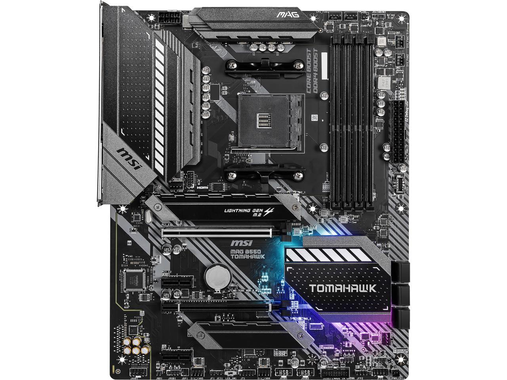

Motherboard
A motherboard is the main printed circuit board (PCB) in a computer. The motherboard is a computer's central communications backbone connectivity point, through which all components and external peripherals connect. Motherboards can be found in virtually all computers, especially desktop and laptop PCs..
At PCopolis, we offer a wide range of Motherboards has its unique strengths and offerings.
ASUS ROG MAXIMUS Z790Intel LGA 1700 socket: Ready for 13th Gen Intel Core processors & 12th Gen Intel Core, Pentium Gold and Celeron Processors |
MSI MAG B550 TOMAHAWKSupports AMD Ryzen 5000 & 3000 Series desktop processors (not compatible with AMD Ryzen 5 3400G & Ryzen 3 3200G) and AMD Ryzen 4000 G-Series desktop processors Supports DDR4 Memory, up to 5100+(OC) MHz |